我做了一个梦，梦到我的导游说第三天和第四天交界的时候有一个地方可以住一个晚上的宾馆，可以洗一个热水澡。那是一个叫tower i的地方，很多挑夫，游客都在排队拿房间的钥匙，我也在等。
然后我突然意识到，哪有什么宾馆，梦醒了，我感觉很热。昨晚临睡前我在睡袋下垫了我的小羽绒服和冲锋衣，看来真的发挥作用了。贝爷说的果然没错，1 layer bottom is better than 3 layers top。
我于是把穿的保暖内衣减了一层，我感觉眼睛也很干，就拿了点滴眼液用了一下。现在才1:53am，再睡一会儿吧。
入睡不是很容易，翻来覆去睡不着，干脆去上了个厕所，外面非常冷。冻僵了身子钻回睡袋，这次反而一下子睡着了。
这一觉一直睡到6:27am。Dominic照例在6:30am带来饮用热水，6:40am带来洗漱用的热水，7:30am吃早饭。这中间我除了洗漱，还把包整理好了，8:25am，我终于全部准备好，从Shira ii营地离开。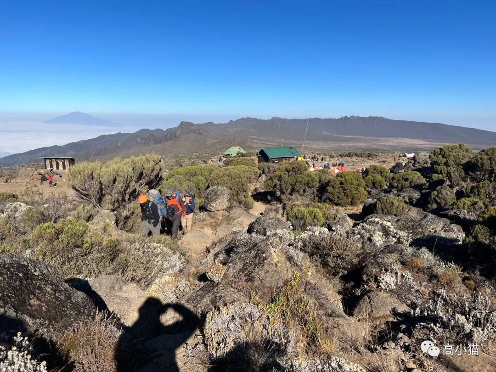
回望shira ii camp今天预计的行程是从Shira ii camp出发（3895m海拔），到达Lava tower camp（4650m海拔）吃中饭，之后继续前进，在Barranco camp（3986m）露宿。这样的行程是所谓的climb high，sleep low，一定程度上是一种锻炼旅行者适应高海拔的环境的方式。
一开始的一路两边都是灌木丛，就是上次介绍的那种叫Erica excelsa的植物。慢慢地两边的植物越来越稀疏，坡也越来越陡。爬上一个小高坡后，我发现有很多石头，上面还叠着小石头，Zakayo说那是人们在那边做的标记，这样回去以后可以跟朋友说我在某个土坡叠了一些时候，下次朋友来的时候可以看到。我心说等我朋友过来，叠的石头可能早就换了不知道多少批了。
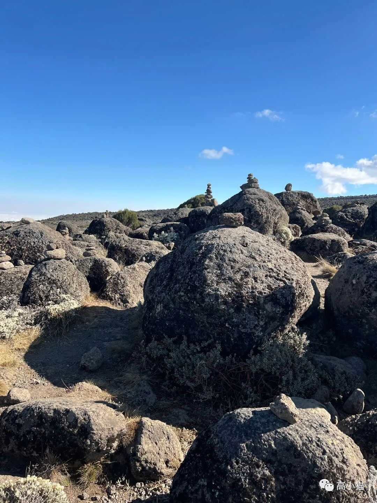
很多大石头上叠的小石头又往前爬了一整，在石头边上开始有越来越多的野花，Zakayo说一定海拔以上，所有的花他们都叫everlasting flower。当然每一种野花也有各自的名字。又往前走了一段，开始有漫山遍野的everlasting flower，开满了整个土坡。
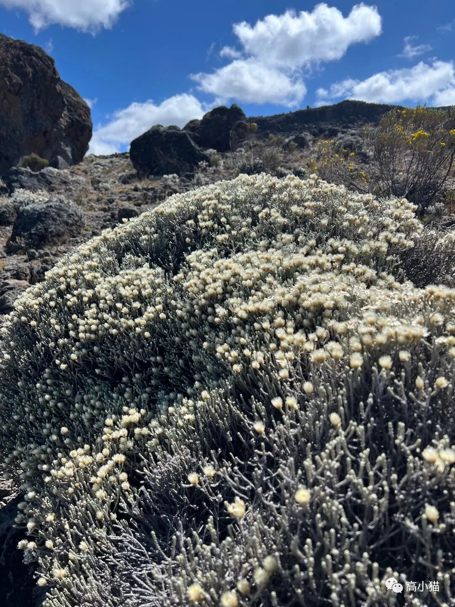
白色的，黄色的花再往前走，慢慢地花也没了，变成都是石头和土，前方就是乞力马扎罗的山峰，所谓的kibo峰，不过被云层盖住了，看不到顶。前面的山脊上有两团黑色的东西，靠右侧的他们叫Shark‘s tooth，中间的那团小一点的黑色的就是Lava tower，营地也就在那边。
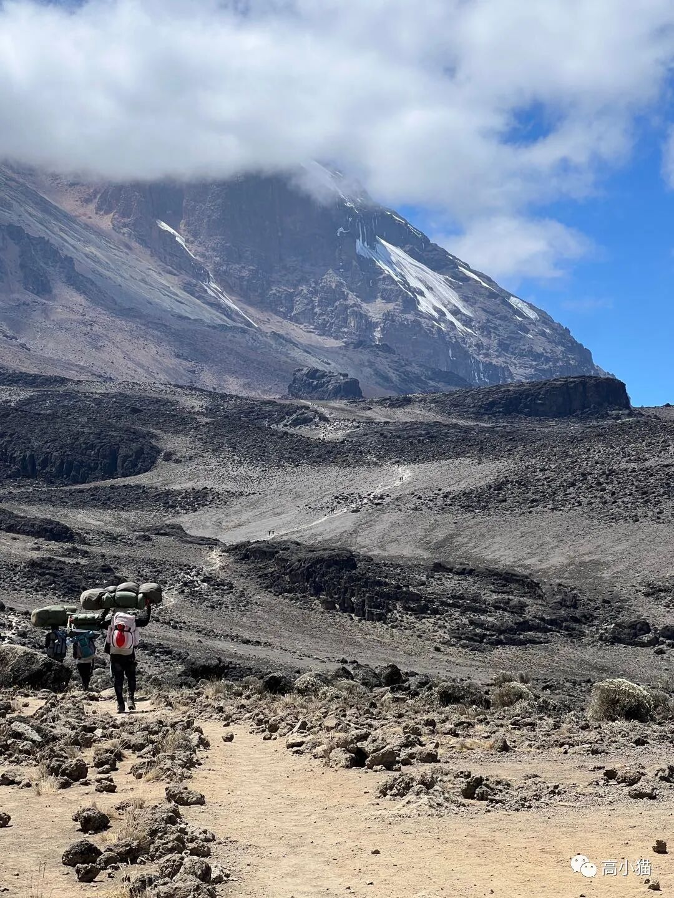
Shark‘s tooth和lava tower因为海拔越来越高，所以我也开始走的越来越艰难。脑袋开始有些轻微的眩晕+头痛，有点类似于前一天一整宿没睡好，第二天起来头晕目眩的感觉。我在网上查过，这种症状属于比较轻微的高原反应，在高海拔地区很正常，导游也安慰我不用担心，让我吃一根棒棒糖补充糖分，再多喝点水，然后进一步放慢脚步。我的脚步最慢的时候，可能每一步两只脚之间的距离只有一只脚那么远，基本可以用挪步来形容。
我个人的感觉是，似乎每个人的身体就像不同功率的机器，每秒钟做同样的动作，消耗的氧气是不同的，一旦我们摄入的氧气低于我们消耗的氧气，就会导致体内的氧气越来越少，最终高原反应越来越严重。而我们其实是可以人为地降低我们做动作的速度，来降低我们自身的耗氧量的。只要我们动作得越慢，耗氧量就越低，就越难有严重的高原反应。
基于这个理论，当我感觉到有高原反应的时候，就可以通过把步幅变小来解决。乞力马扎罗山这里的导游很喜欢说的一句话叫pole pole，意思是慢一点，就是这个意思。
我的导游Zakayo经常跟我说，你来爬山，不是为了competition，而是为了completion，不管多慢，只要你登顶了，目的就达到了，所以慢一点，不要着急。
我想我们人生也是一样，速度其实没有那么重要，重要的是最终可以达到目标。
闲话扯回来，在向山上挪步了很久很久以后，我终于到了lava tower，看着那块儿黑色的石头越来越近，是我非常强劲的动力。我最终在1:13pm到达了lava tower camp。
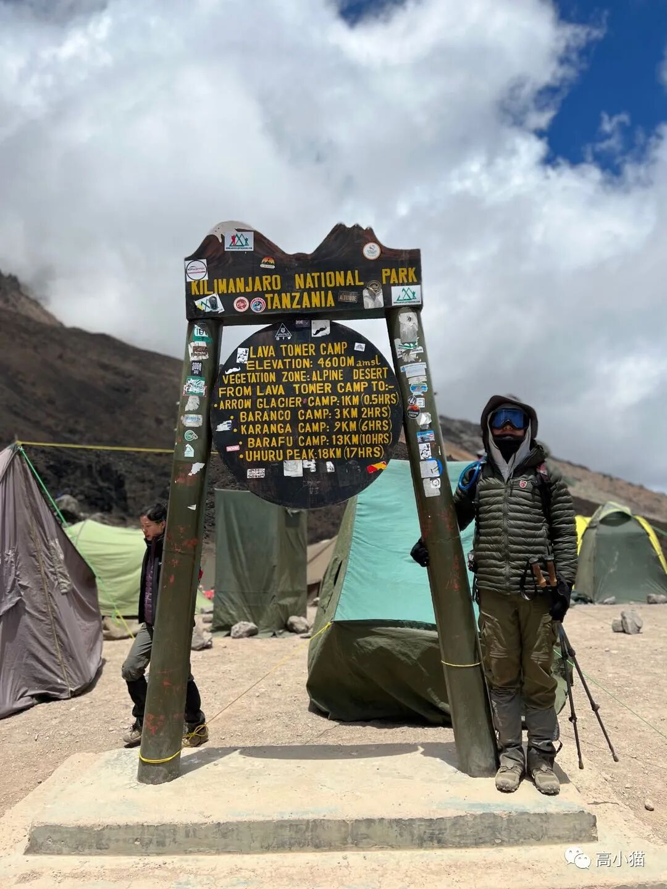
lava tower camp，似乎不用打码了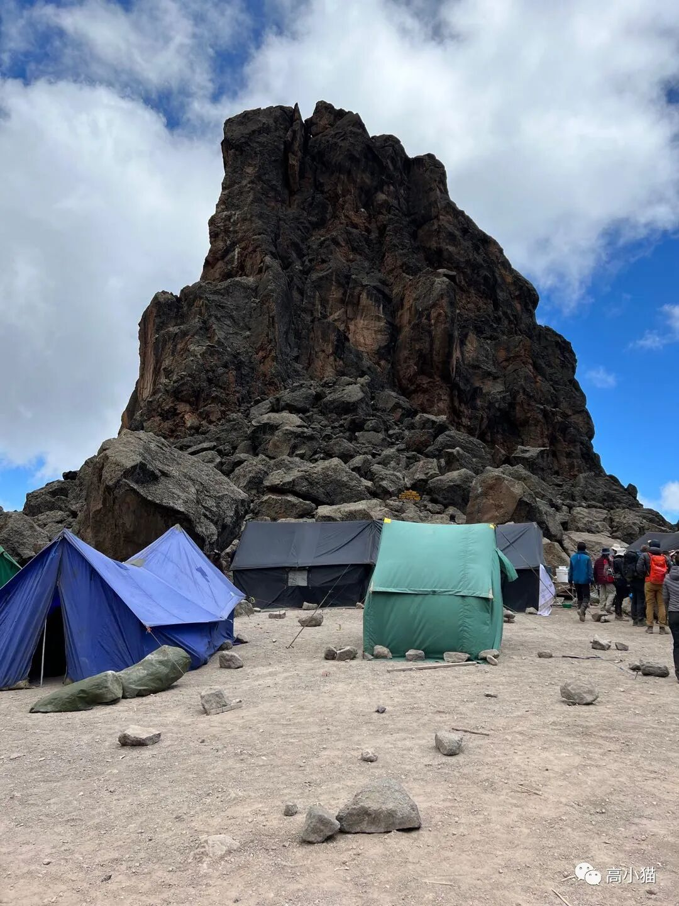
lava tower和camp我的crew早早来到了这里，搭了一个简易的营帐，做好了午饭。今天的午饭是咖喱角+鸡蛋+某种粥。粥又开始变咸了，我有点犹豫要不要跟Oscar再说一声。
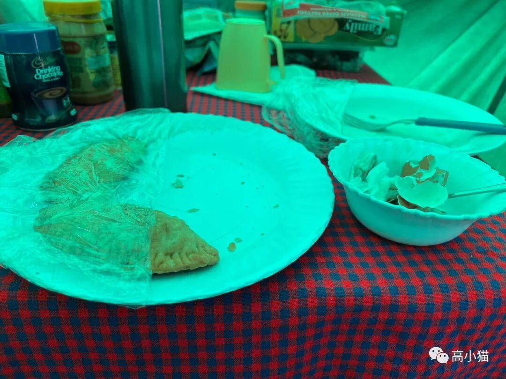
剩下的咖喱角2pm的时候我们吃完了午饭，继续上路往Barranco camp进发。一路上都是下坡，但是我却越走越累，可能4000米以上我暂时还没有适应。
走了一段以后Zakayo看我实在走得太慢了，就帮我把我的包背了。这确实帮助很大，加上越是下坡海拔越低，我也走得越来越轻松。
这里的一路上又是不一样的景色，漫山遍野的植物变成了一种类似棕榈树的植物。
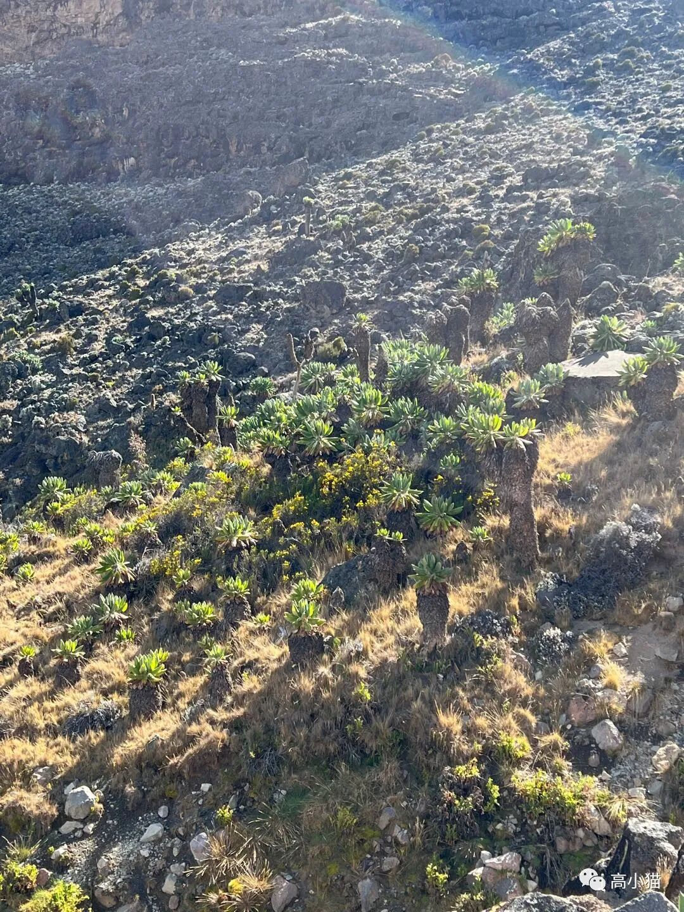
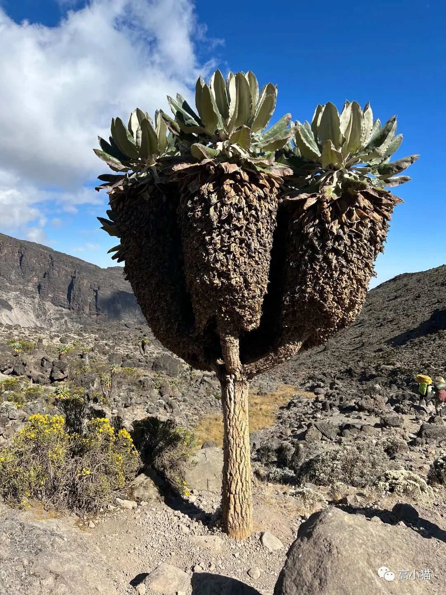
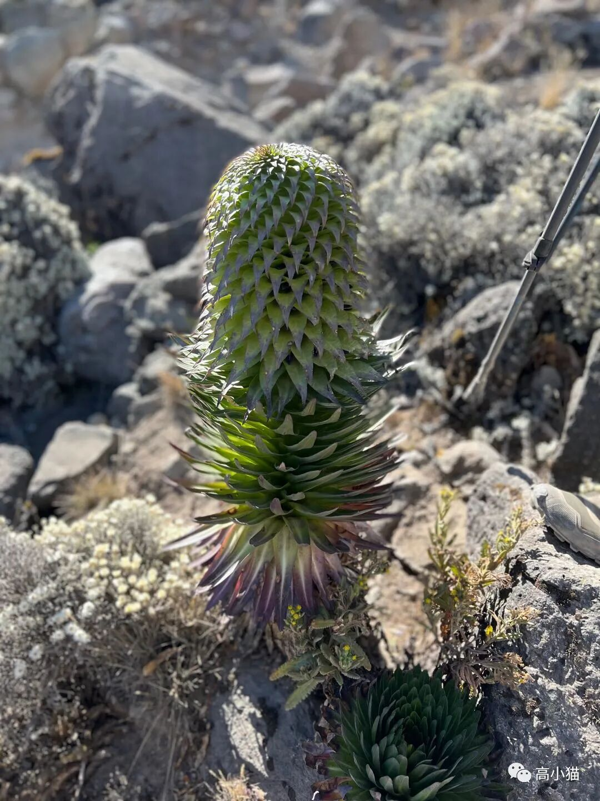
这里也第一次看到了流动的溪流，之前经过的几条溪流因为是旱季，所以都干枯了。
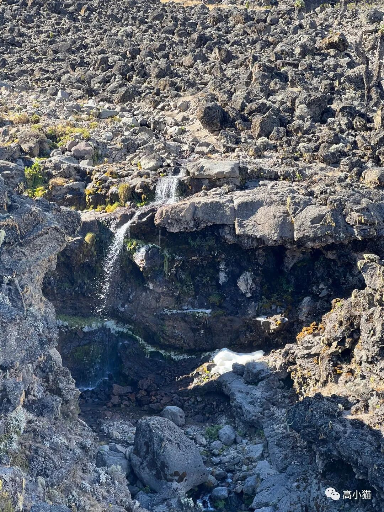
溪流下的小瀑布又走了不知道多久，终于Zakayo跟我说前面就是营地了。最终我们在4:40pm到达了Barranco camp。我觉得我今天累的程度和第二天有过之无不及。
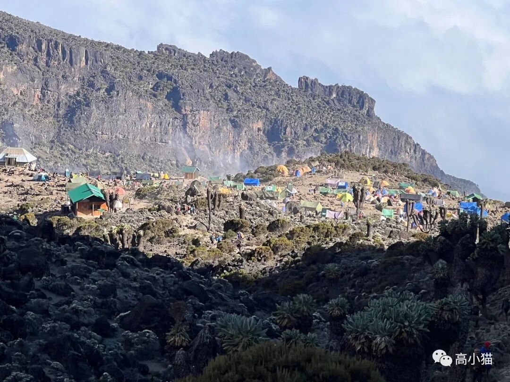
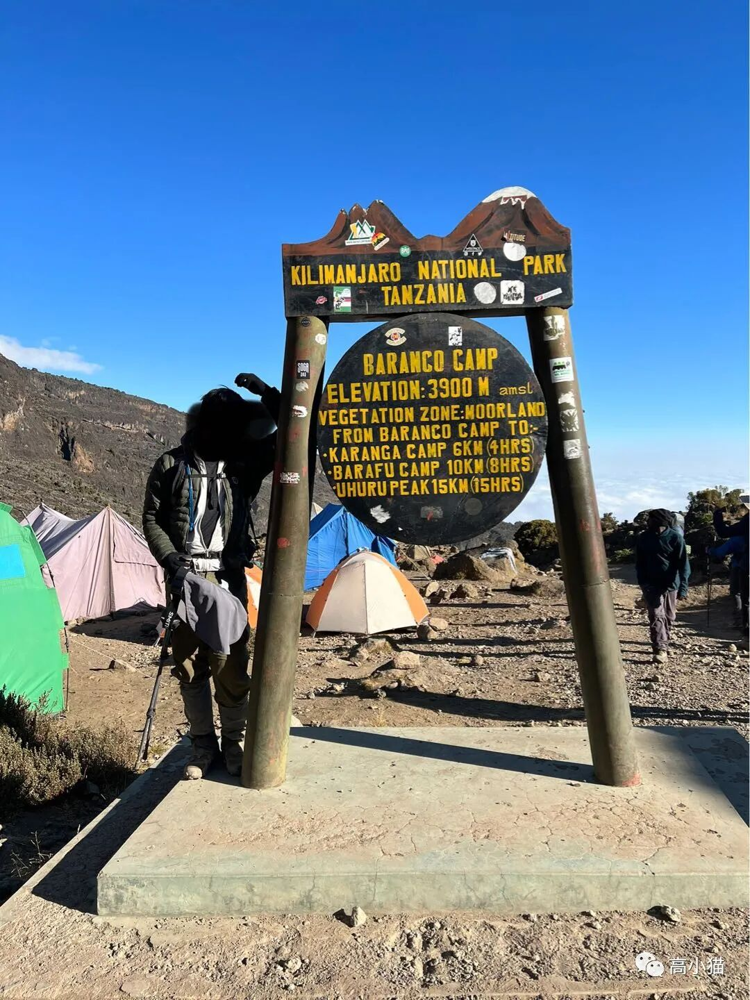
Barranco camp的风很大，虽然太阳还没落下，但是还是冷飕飕的，风也刮得帐篷呼呼作响。我站在寒风中找到了有信号的地方，把写的昨天的文章发了出去，联系了一下外面报了平安，然后就躲回了帐篷里。
Dominic端来了热水，还是惯例的一小面盆热水。我先用这些水把脸洗了。洗完以后我感觉我的头实在是很痒，四天没洗了，我决定洗一下。因为当时出来的时候，我觉得洗头发是没有可能的，所以我干脆连洗发水也没带。我手边唯一的肥皂就是一支free plus的洗面奶，于是我尝试用洗面奶洗头。
我先用小毛巾把头发打湿，把洗面奶揉出泡，抹在前额的头发上做实验，似乎起泡的效果还可以，头皮可以清洗，于是我慢慢把实验范围扩大，直到整个头都是洗面奶泡沫。在充分揉搓后，我用小毛巾裹着脸盆里的水往头上搓，一点一点把头发上的泡沫洗下来。所幸我是短发，洗了一会儿竟然头上抓不出多少泡沫了，脸盆里的水变成了白色的泡沫加上浅浅的土黄色。我就用这个水又把最脏的脚洗了。我的hiking鞋并不是完全防尘的，所以hike一天结束，几个脚趾都黑了，我就用这些水把脚又洗了。
我担心头发上还残留很多洗面奶没有洗干净，明天可能会更痒，于是问dominic能不能再给我一些些热水。他看上去有些为难，我于是跟他说我就要四分之一脸盆的热水。他走了一会儿，回来以后从给我喝的热水里倒了一些热水出来给我。我用我的饮用的冷水把这些热水兑了一下，得到了更多的温水，用这些水好好地把头发又洗了一遍。这次没有什么泡泡了，我觉得应该洗干净了。这些水我又用来擦了一下身子。清洁工作算是完成了。
晚饭，今天有“披萨”，当然底下的不是面饼，而是类似咖喱角的东西，上面的番茄肉酱也有点怪怪的，不过能吃。汤也还是咸的，我真的得跟Oscar说一下了。
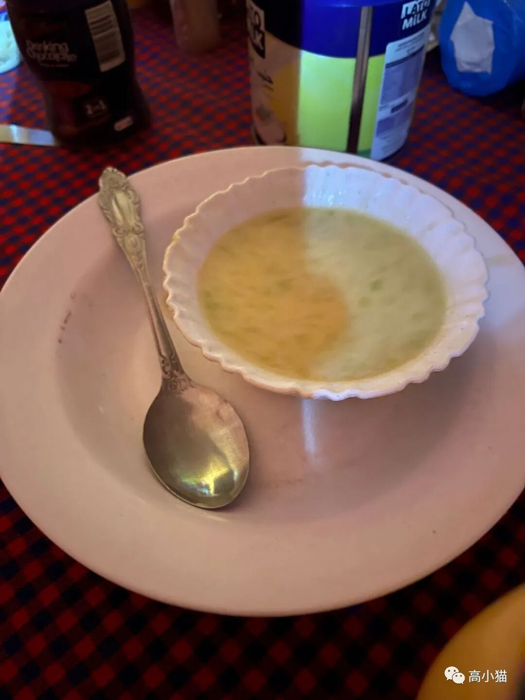
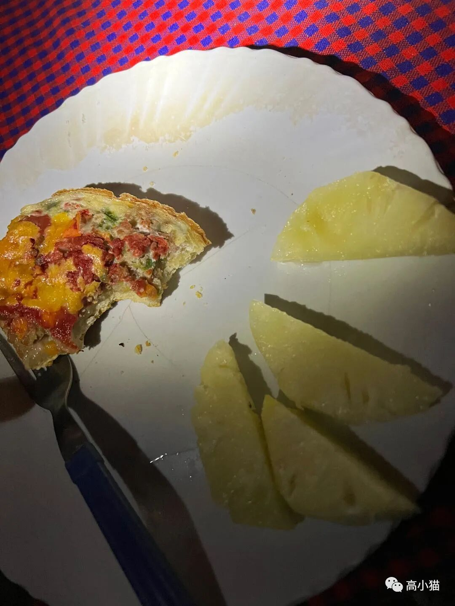
吃完晚饭以后，头晕目眩的感觉已经没了，测的血氧量是83，甚至比第二天还好，就是心率更高了。
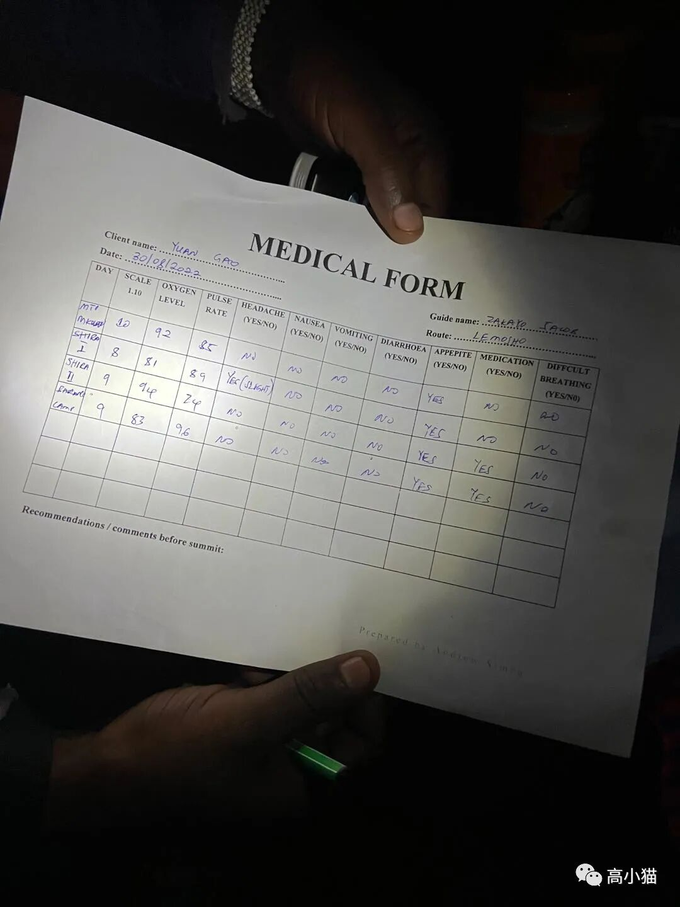
晚上写了一会儿文章，准备睡了。据说明天的行程会轻松。
临睡前出去上厕所，发现外面的月亮亮得发指，像电灯泡一样。iphone 10秒曝光就能轻松地拍出满天星空（此处iphone请打钱，谢谢）
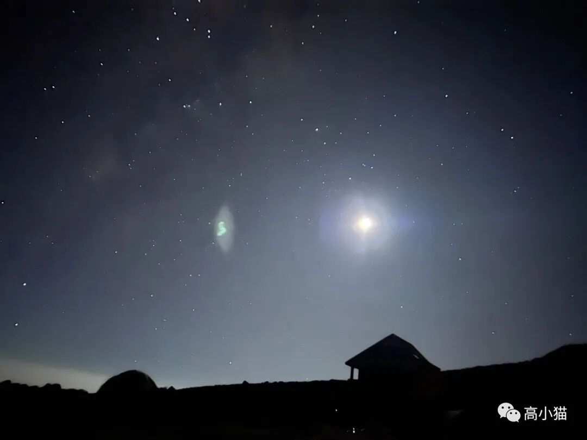
右上角的是月亮，左上角的是手机的反光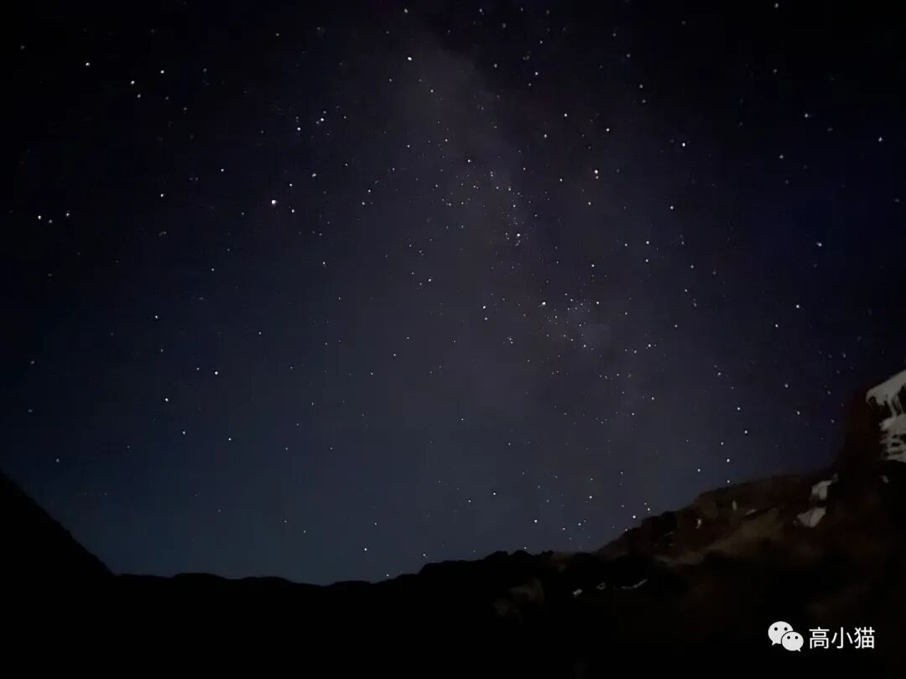
没有月亮的角度完